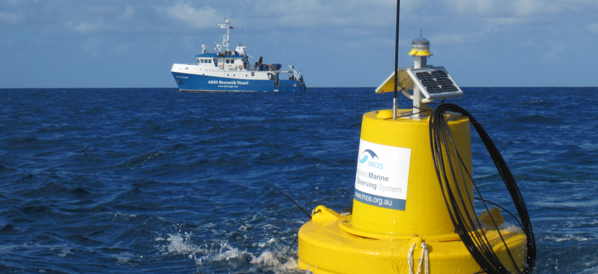

Each HarborSense unit is designed to operate independently using solar power, ensuring continuous monitoring without the need for constant maintenance. The system collects data and transmits it wirelessly to a central dashboard.
| Industrial pH probe |
| 10W solar starter kit (panel, regulator) |
| Conductivity probe |
| 12V 10Ah LiFePO4 battery |
| Depth / pressure sensor |
| Mounting hardware |
| Turbidity Sensor |
| Power management & surge protection |
| LoRa communications module |
| Microcontroller & PCB (prototype run) |
| Enclosure, connectors & cabling |
| Calibration & QA per node |
These components work together to collect and transmit real-time environmental data.